TLDR;
Recently I helped company to finish S3 bucket migration in order to improve image upload speed of our lambda function. I found out letting lambda function and S3 buckets located in the same region can reduce latency significantly. Because lambda function is charged by the length of execution time and memory size, it’s quite helpful by reducing S3 upload latency.
Objective
This article aims to explain why I need to move our alert bucket from us-east-1 to us-west-2. Because one of our lambda function is the latency-sensitive application, I start digging out why uploading a 60kb image takes more than 600ms. Typically AWS should minimize the end to end latency between 2 regions by utilizing AWS backbone network so that we consider the situation shouldn’t be that bad. Here we perform serveral experiments to find the reason behind the scene.
Background
We store all the alert images on us-east-1 S3 bucket because previously we run everything on us-east-1. However, most AWS outages happen in that region as AWS tends to roll out new services or features in that region frequently. We want to make our services become more robust so that we soon migrate most of our critical services to us-west-2 but leave our S3 bucket in us-east-1. We don’t notice the upload latency between our application to S3 has a huge difference until we observe our edge lambda function.
Experiments
As of 2020 March, we do several experiments with different configs (location and ssl setting) and summarize the result as this table.
| SSL: false | SSL: true | |
|---|---|---|
| Lambda (us-east-1) → S3 (us-west-2) | 300ms ~ 400ms | 500ms ~ 550ms |
| Lambda (us-east-1) → S3 (us-east-1) | 60ms ~ 120ms | 60ms ~ 133ms |
SSL: false
Lambda (us-east-1) → S3 (us-west-2)
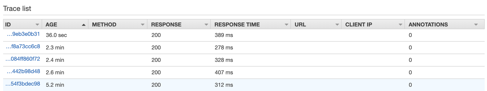
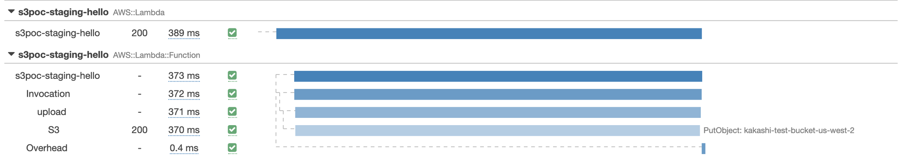
Lambda (us-east-1) → S3 (us-east-1)
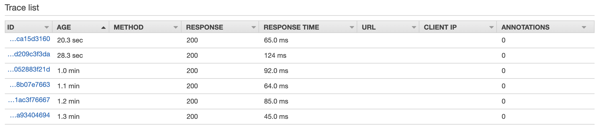
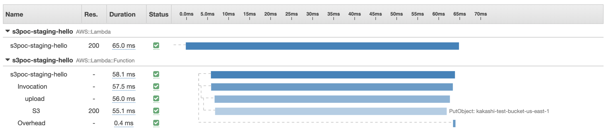
SSL: true
Lambda (us-east-1) → S3 (us-west-2)
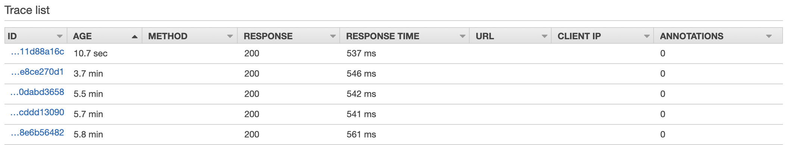
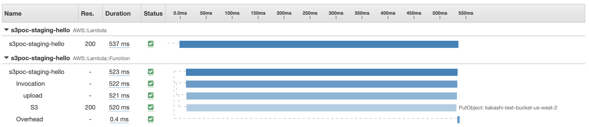
Lambda (us-east-1) → S3 (us-east-1)
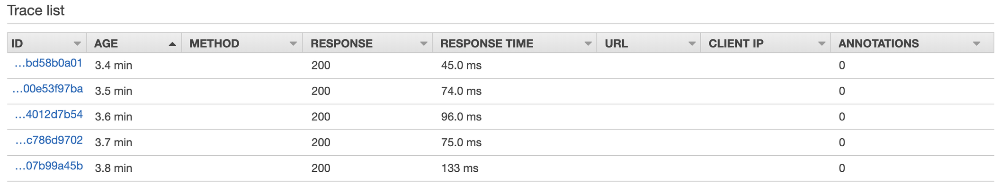
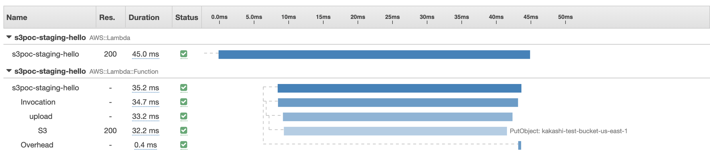
Analysis
We use python boto3 to perform S3 uploading and enabled logging level DEBUG for better observing what happened during uploading.
1 | import logging |
HTTPS connection
When we use s3.put_object to upload our data, you can see first of all our application should establish a new http connection.
When we upload a 30 kb image from us-east-1 to us-west-2, we found out it takes us 250ms to establish https connection! It’s quite weird but actually it makes sense. Let’s take a look at AWS internal latency report from https://www.cloudping.co/. The p50 of round trip time between us-west-2 to us-east-1 is 81.35 ms. Thus, according to this Cloudflare chart, establishing a new https connection needs to take 3 RTTs and it is roughly 240 ms. (80ms * 3)
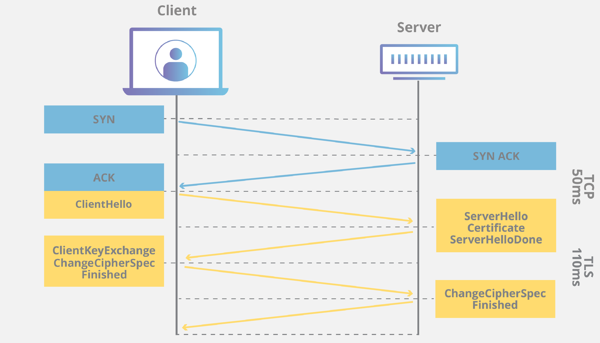
Wait for 100 continue response
Another interesting thing is when we put a new object to S3, we will see this message Waiting for 100 continue response. According to S3 document, before we upload our data, server-side can do further check like authentication or redirection. Normally we should specify Expect: 100-continue on headers, and server will return 100 continue or 417 response. If we get the 100, we can continue uploading our data. If we get 417, we should stop uploading anything.
This 100 Continue response helps us avoiding send data twice or stop unnecessary uploading. However, one more RTT takes place here, and this also adds another 80ms to our latency.
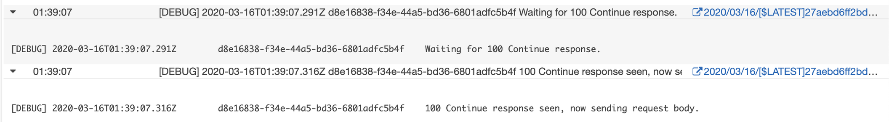
Dropped connections
The last thing we wanna analyze is dropped connections. We all know that establishing https connection is quite expensive. Typically, we assume this won’t happen frequently because we usually adopt http keep-alive to avoid http connection recreation. Despite S3 SDK boto set keep-alive on header automatically, we still find out there are a lot of resetting dropped connection messages. After searching this on stackoverflow, 1, 2, we understand that s3 server will drop idle keep-alive connections after few seconds. This may help s3 become more robust because:
- a lot of idle connections also consume tons of memory
- others not able to connect to S3 due to the max connections limit.
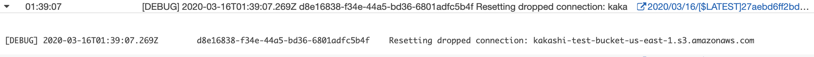
Summary
No matter how big is your data, choose the nearest S3 bucket for your application can help you reduce latency significantly.
Reference
- https://stackoverflow.com/questions/41860771/s3-connections-timing-out-quickly-in-python-2-7
- https://stackoverflow.com/questions/28867840/why-do-i-constantly-see-resetting-dropped-connection-when-uploading-data-to-my
- https://d1.awsstatic.com/whitepapers/AmazonS3BestPractices.pdf